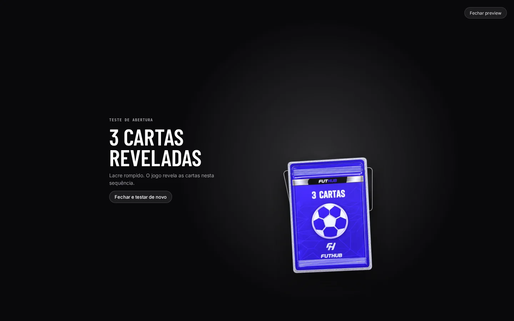

Início / Casos de uso
Casos de uso
Um dia operando o FutHub.
Duas situações comuns, do começo ao fim, com as telas que você usaria em cada momento.
CASO 01


Lançar uma edição nova antes do fim de semana
Um clube importado, uma coleção nova, cards desenhados e um pack temático à venda, tudo numa tarde.
Ler o caso → CASO 02O servidor está com moeda demais
Os jogadores compram pack atrás de pack. Veja como reequilibrar o /lucro sem tirar a graça.
Ler o caso →FutHub Admin
Tudo que o jogo precisa, num painel só.
Do elenco real ao card no Discord: importe, desenhe, embale, precifique e publique sem abrir o código nem o banco.